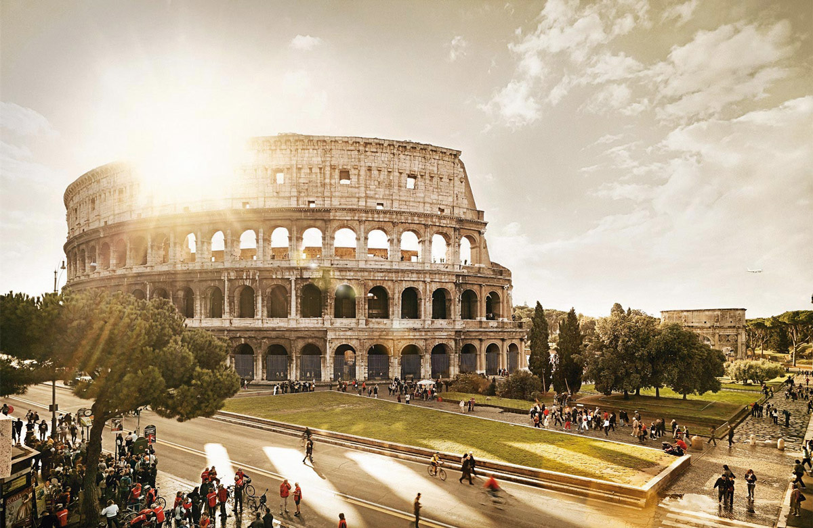
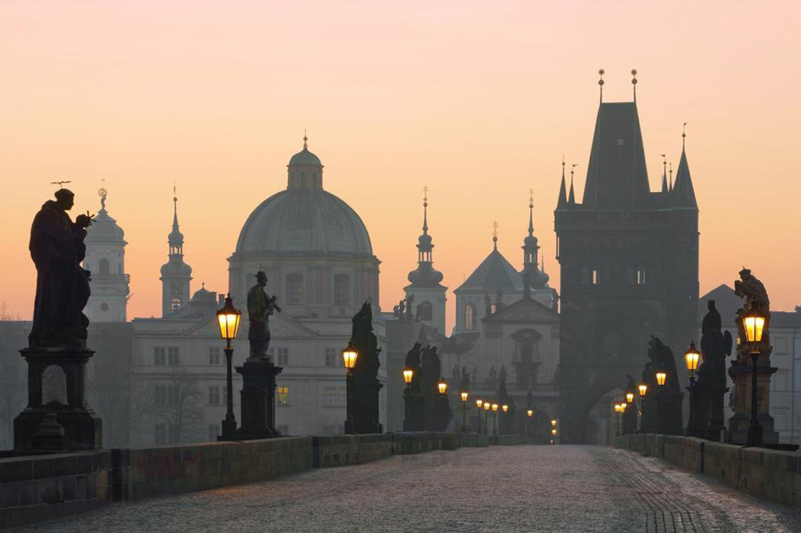
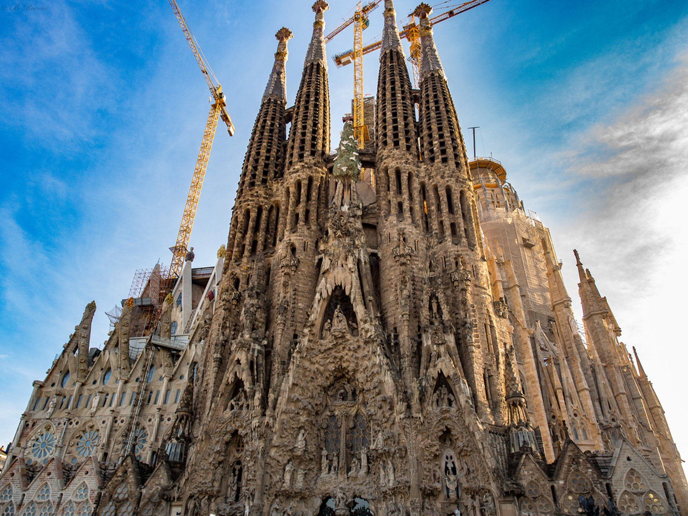
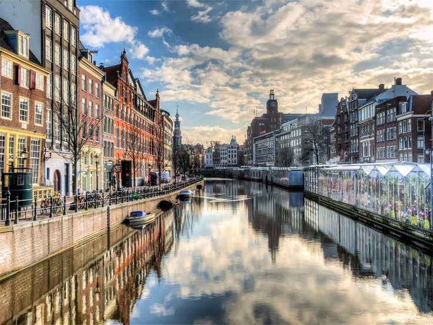

Путешествия – это удивительная возможность увидеть мир, познакомиться с новыми культурами и расширить кругозор. Европа – один из самых популярных регионов для путешественников, предлагающий разнообразие архитектуры, природных ландшафтов и гастрономических традиций. В этой статье мы рассмотрим маршрут по пяти европейским городам, которые стоит посетить.
Париж – это город романтики, искусства и элегантности. Первое, что приходит на ум при упоминании столицы Франции, – это, конечно же, Эйфелева башня, ставшая ее символом. Поднявшись на ее вершину, можно насладиться панорамным видом на весь город. Недалеко от башни расположен Лувр – один из крупнейших музеев мира, где хранятся тысячи произведений искусства, включая знаменитую «Мону Лизу». Еще одна знаковая достопримечательность – Нотр-Дам де Пари, великолепный готический собор, переживший пожары и реконструкции, но сохранивший свою уникальную атмосферу. Гуляя по Елисейским полям, можно добраться до Триумфальной арки, возведенной в честь побед Наполеона. Париж также славится своими уютными улочками и бульварами, которыми приятно бродить, открывая для себя небольшие кафе, модные бутики и исторические здания.
Рим – это город, где история буквально оживает на каждом шагу. Одним из главных символов города является Колизей, где в древности проходили гладиаторские бои и массовые зрелища. Рядом с ним расположен Форум, когда-то являвшийся центром общественной жизни Древнего Рима. Еще одной важной достопримечательностью является Ватикан, карликовое государство внутри Рима, где находится величественный Собор Святого Петра и Сикстинская капелла с росписями Микеланджело. Туристы также любят посещать Фонтан Треви, где принято бросать монетку, загадывая желание вернуться в Рим. Еще одно место, которое нельзя пропустить, – Пантеон, древний храм, который сохранился в практически первозданном виде. Прогулки по узким римским улочкам с обязательным посещением маленьких тратторий, где подают настоящую пасту Карбонара, станут приятным дополнением к путешествию.

Прага – это город средневековой атмосферы, мостов и загадочных легенд. Главная достопримечательность – Карлов мост, соединяющий Старый и Малый города. Он украшен тридцатью скульптурами святых и считается одним из самых красивых мостов Европы. В самом сердце Праги расположена Староместская площадь, где находятся знаменитые Астрономические часы, привлекающие толпы туристов каждый час. Поднявшись на Пражский Град, можно полюбоваться панорамой города и посетить величественный Собор Святого Вита, поражающий своим готическим убранством. Еще одно знаковое место – Золотая улочка, где, по преданию, жил сам Франц Кафка. Прага славится не только архитектурой, но и гастрономией – обязательно стоит попробовать традиционное вепрево колено и знаменитое чешское пиво в одном из старинных пивных залов.

Барселона – это город Гауди, бесконечных пляжей и страстного фламенко. Одной из самых известных достопримечательностей является Саграда Фамилия – необычный собор, строительство которого ведется уже более века. Прогуливаясь по Барселоне, невозможно не заметить шедевры Гауди – причудливые здания Каса Мила и Каса Батльо, напоминающие живые существа. Не менее удивителен Парк Гуэль, наполненный яркими мозаиками, извилистыми дорожками и скульптурами. Центральная улица Ла Рамбла всегда оживлена – здесь можно увидеть уличных артистов, купить сувениры или заглянуть на знаменитый рынок Бокерия, где продают свежие морепродукты, хамон и экзотические фрукты. Барселона также славится своими пляжами, такими как Барселонета, где можно расслабиться после долгих прогулок по городу. Для настоящего погружения в испанскую культуру стоит попробовать традиционную паэлью и посетить шоу фламенко в одном из местных театров.

Амстердам – это город каналов, велосипедов и музеев. Одной из самых живописных частей города является Кольцо каналов, внесенное в список Всемирного наследия ЮНЕСКО. Здесь можно покататься на лодке, наблюдая за уютными голландскими домиками с высокими окнами. В центре города расположен знаменитый Рейксмузеум, где хранятся работы Рембрандта и Вермеера. Любители соврем

| Город | Основная достопримечательность | Средняя температура летом | Известное блюдо |
| Париж | Эйфелева башня | +25 | Круассаны |
| Рим | Колизей | +30 | Паста Карбонара |
| Прага | Карлов мост | +22 | Свичкова |
| Барселона | Саграда Фамилия | +28 | Поэлья |
| Амстердам | Каналы | +20 | Селедка |
Европа – удивительный регион, который предлагает множество интересных маршрутов. Независимо от того, любите ли вы архитектуру, историю или гастрономию, здесь найдётся что-то для каждого. Путешествуйте, открывайте новые места и наслаждайтесь моментами!